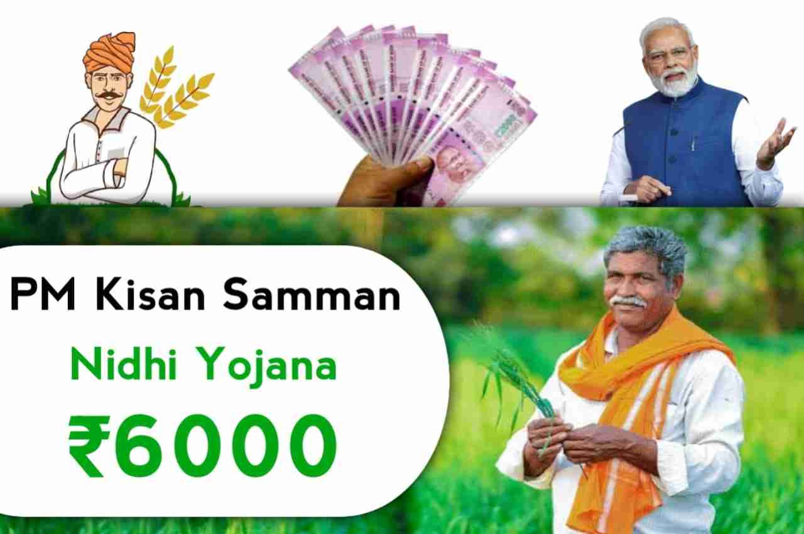

PM Kisan Samman Nidhi Yojana

Pradhan Mantri Kisan Samman Nidhi is an initiative by the government of India that give farmers up to ₹6,000 per year as minimum income support. The initiative was announced by Piyush Goyal during the 2019 Interim Union Budget of India on 1 February 2019. The scheme has cost ₹75,000 crore (equivalent to ₹930 billion or US$12 billion in 2023) per annum and came into effect December 2018.
The scheme was first conceived and implemented by government of Telangana as the Rythu Bandhu scheme, where a certain amount is given directly to eligible farmers. The scheme has received accolades from various organisations for its successful implementation, including World Bank. Many economist suggest that this type of investment support is better than farm loan waivers. With the positive outcome of this scheme, Government of India wanted to implement it as nationwide project and it was announced by Piyush Goyal during the 2019 Interim Union Budget of India on 1 February 2019.
For 2018–2019, ₹20,000 crore was allocated under this scheme. On 24 February 2019, Narendra Modi launched the scheme in Gorakhpur, Uttar Pradesh, by transferring the first instalment of ₹2,000 each to over one crore farmers.
Ministry of Agriculture and Farmers Welfare has awarded the top-performing states, and districts under PM Kisan Samman Nidhi Yojana. It is based on the criteria such as correction of data, addressing farmer grievances, and timely physical verification exercise.
view more